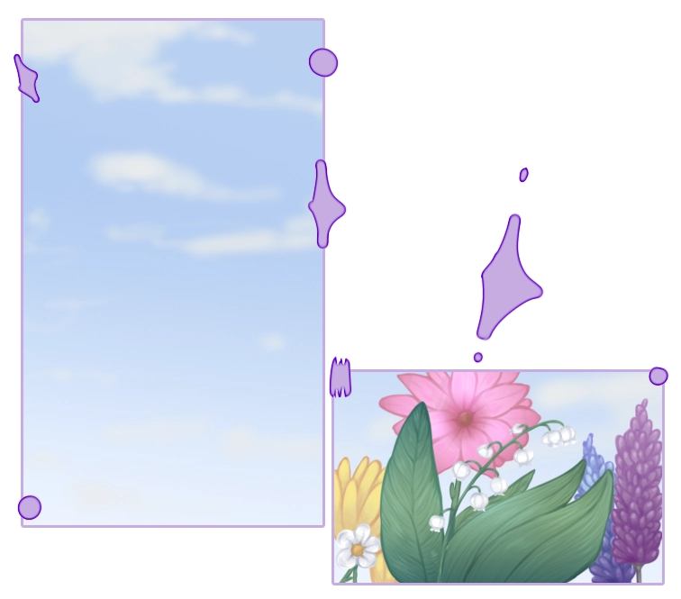

Olá sou a Jéssica!
Aqui vais encontrar ilustrações
e projetos criativos.
Tudo o que faço tem um pouco de mim.
Espreita o que ando a criar!


Nome:
Jéssica Serra
Email:
jessicasofiaserra@gmail.com
Hi, I'm Jéssica - a creative mind with a growing passion for tech, front-end development, and UX/UI
design.
With a background in customer support and visual arts, I combine problem-solving with an eye for
design.
I'm currently learning HTML, CSS, and JavaScript, and always excited to grow, build, and
collaborate.

Aqui estão algums dos meus projetos.
Faço ilustrações digitalmente em temas variados, mas o meu foco está no feminino e na criação de personagens.
Também tenho alguns projetos de UI/UX que fazem parte deste portfólio.
Além disso partilho a minha arte noutras redes sociais, todos os links estão no meu Carrd.